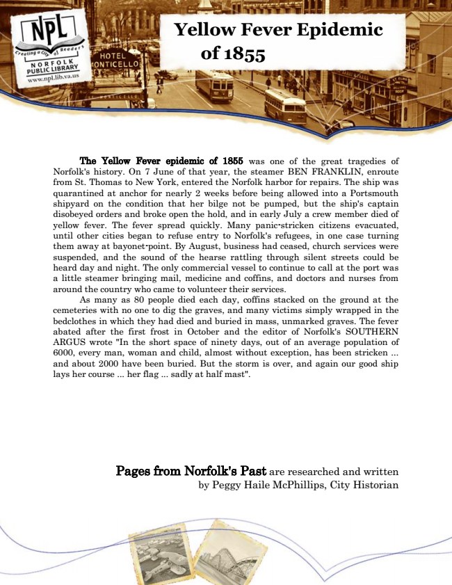

Yellow Fever Epidemic
of 1855
The Yellow Fever epidemic of 1855 was one of the great tragedies of Norfolk's history. On 7 June of that year, the steamer BEN FRANKLIN, enroute from St. Thomas to New York, entered the Norfolk harbor for repairs. The ship was quarantined at anchor for nearly 2 weeks before being allowed into a Portsmouth shipyard on the condition that her bilge not be pumped, but the ship's captain disobeyed orders and broke open the hold, and in early July a crew member died of yellow fever. The fever spread quickly. Many panic-stricken citizens evacuated, until other cities began to refuse entry to Norfolk's refugees, in one case turning them away at bayonet-point. By August, business had ceased, church services were suspended, and the sound of the hearse rattling through silent streets could be heard day and night. The only commercial vessel to continue to call at the port was a little steamer bringing mail, medicine and coffins, and doctors and nurses from around the country who came to volunteer their services.
As many as 80 people died each day, coffins stacked on the ground at the cemeteries with no one to dig the graves, and many victims simply wrapped in the bedclothes in which they had died and buried in mass, unmarked graves. The fever abated after the first frost in October and the editor of Norfolk's SOUTHERN ARGUS wrote "In the short space of ninety days, out of an average population of 6000, every man, woman and child, almost without exception, has been stricken ... and about 2000 have been buried. But the storm is over, and again our good ship lays her course ... her flag ... sadly at half mast".
Pages from Norfolk's Past are researched and written by Peggy Haile McPhillips, City Historian